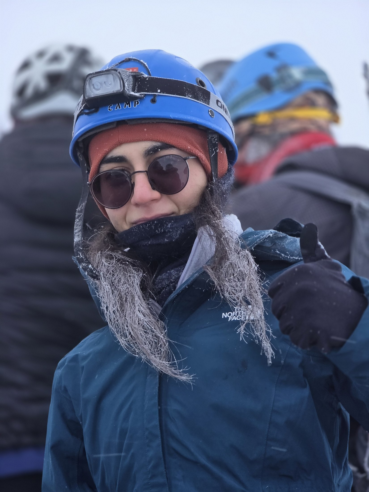
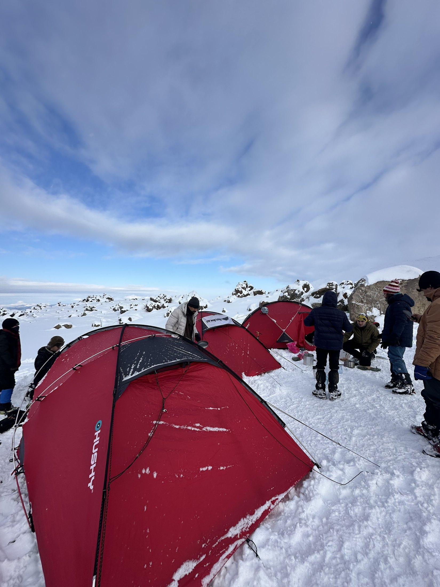
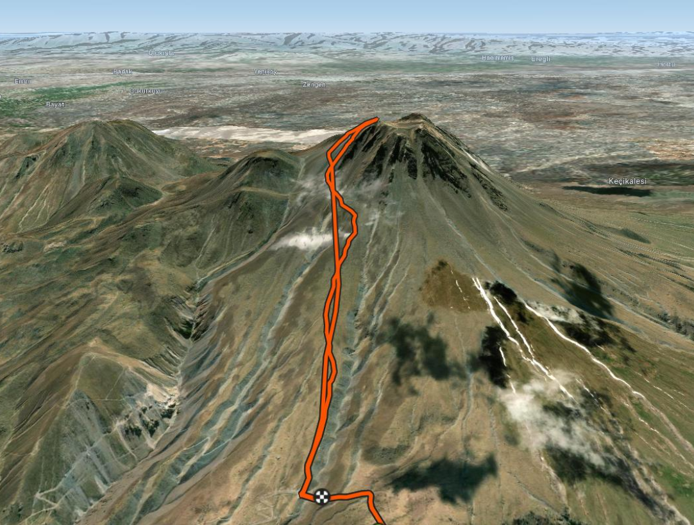

FAALİYET BİLGİSİ
| Faaliyetin adı: | Hasan Dağı Kış Zirvesi |
|---|---|
| Tarihi: | 28 Şubat - 01 Mart / 2026 |
| Yeri: | Aksaray |
| Türü: | Zirve |
| Güzergâh: | Bakırköy-Mecidiyeköy-Bostancı-Soğanlık-Pendik kulüp otobüsü-Aksaray Dinlenme Tesisi Molası-Kamp Alanı |
| Kat edilen yol: | 9,5 km (yaklaşık) |
| Alınan irtifa: | 1400m |
| Katılımcılar: | Hüseyin Fikret Değirmencioğlu, İlayda Efsane Algın, Beril Kiyanfer, Elif Çamlıkaya, Behzad Gorbanzadeh, İlkin Çetinkaya, Talha Öztürk, Umut Uzer |
MALZEME BİLGİSİ
| Kamp malzemeleri: | 3 tane 3 kişilik kışlık çadır(toplam 3), tencere ve yemek seti(3), tüp(2), mat(8), tulum(8) |
|---|---|
| Teknik malzemeler: | Çamurluk(8), kafa lambası(8), kask(8), garmin saat(1), baton (7), krampon(8), kazma(8), tozluk(8), |
| Kişisel malzemeler: eş | Bakım ürünleri, çakı, ilk yardım seti, çakmak, ıslak ve kuru mendil, güneş kremi, güneş gözlüğü, vazelin, ağrı kesici, melatonin |
| Diğer malzemeler: | Power bank |
| Yiyecek: | Makarna, kavurma, yumurta, hurma, meyve pestili, kuruyemiş ve bolca atıştırmalık, su, çay, kahve, çabuk çorba, kaşar, tost ekmeği, hindi füme |
ROTA BİLGİSİ
| Kamp Alanı: | Hasandağı 2000m kamp alanı |
|---|---|
| Su kaynağı: | Etrafta bol kar var, bu nedenle eriterek kullanabiliyorduk |
| Tehlikeler: | yukarı çıktıkça -20lere düşen hava ve 30km’ye yaklaşan rüzgarlar. yoğun kar ve sis nedeniyle görüş kısıtlılığı, yükseklik nedeniyle baş dönmesi. |
| Zemin: | Bolca kar |
| Zorluk derecesi: | Zor |
| Harita: | Rota haritasını görüntüle |
| GPS Bilgileri: | Hasan Dağı zirve GPX kaydı |
| Hedeflenen Zaman: | 8 saat |
| Harcanan Zaman: | 11.5 saat |
{kind=link}
PROGRAM
| Zaman | 28 Şubat | 1 Mart |
|---|---|---|
| Sabah | - | Ara ara kar yağışlı, bol rüzgarlı |
| Öğle | Güneşli | Güneşli |
| Akşam | Kar yağışı | - |
ULAŞIM BİLGİLERİ:
Zirve etkinliği 27 Şubat Cuma akşamı Asya Dağcılık kulüp aracımızın Bakırköy-İncirli (Alfemo) önünden 23.00’da hareket etmesiyle başladı. Gece yarısı ihtiyaç molaları (çorba) dışında durmadan 28 Şubat sabah saat 08.00 civarında Aksaray’ın dinlenme tesisinde kahvaltı ettikten sonra kamp alanına ulaştık.
Dönüş ise 1 Mart günü Hasan Dağının 2000msinde yer alan kamp alanından zirve sonrası saat 18.30da hareket etmemizle başladı. Yine sadece ihtiyaç molaları için durarak 2 Mart pazartesi günü sabah saatlerinde İstanbul’a vardık.
Faaliyet Akışı:
Kamp alanına varınca ilk olarak pick up ile getirilen çantalarımızı alarak çadırlarımızı çıkardık ve uygun bir alan seçtik. Yoğun kar nedeniyle çadırları kurmadan önce karları iyice ezmek gerekti. Çadırları kurduktan sonra karları eriterek haşladığımız makarnalar ile kavurma karıştırdık. Behzad Abi bizlere hurmalı yumurta yaparken bir yandan da zirve için herkese yetecek kadar tost yapmaya başladık. Akşam yemekleri yenildikten ve zirve için hazırlandıktan sonra güneşin batmasıyla birlikte biz de uyumak için çadırlarımıza girdik.
Gece hava ciddi anlamda soğudu. Birkaç kez ben (Beril) soğuktan uyandım ve en sonunda Efsane’den ısı pedlerinden rica ettim. Benim decathlondan aldıklarım çalışmadı fakat Efsane’nin şoktan getirdikleri gayet iyi çalıştı ve geceyi geçirmemi sağladılar.
Sabah 03.00 civarında uyandık ve zirve öncesi son kontrolleri yaparak Murat Hocaların ekibi ile birlikte saat 04.15te yürüyüşümüze başladık. Batonlar ile hızlıca yükseldik, sadece kısa molalar vererek ilerledik fakat önümüzde bulunan diğer gruba denk gelmemizle hızımızda ciddi bir düşüş yaşandı. Bu kadar hızlı ilerleyebilmemizin sebebinin önden giden grubun karları ezerek yol oluşturması olduğunu fark ettik fakat hız düşüşü nedeniyle ciddi üşüme durumu oluştu, kaz tüyü montuna geçiş yapmak gerekti.
Bir noktada kar iyice arttı ve hem batonları bırakıp kazmaya geçmemiz hem de kramponlarımızı takmamız gerekti. Bu sırada Umut’un ayakkabısının altı parçalandı (ayakkabı daha önce tamire gitmişti fakat düzgün yapılmamış??) fakat dönmek yerine devam etmek istedi. Efsane kramponlarını giyerken çıkardığı dış eldiven ve krampon kılıfı da kayarak aşağıya düştü. Efsane krampon kılıfını geri dönüp alabilse de eldiveni bulamadık. O sırada bulunduğumuz yerde yoğun bir sis ve yağış olduğundan görüş açımız çok azdı ve bu yaşananlar sayesinde ne kadar eğimli bir yüzeyde bulunduğumuzu anlamış olduk.
Sisli bölgeden çıktığımızda biraz daha rahatladık, hem güneş ışınları bizlere ulaşabildiğinden ısınabiliyor hem de artık zirveyi görebildiğimiz için motive olabiliyorduk. Son 350m olan kısımda Murat Hoca buranın da en az 2-3 saat süreceğini söyledi ve öyle de oldu. Kar tabakasının kalınlığı ve dağın son kısımlarındaki eğim nedeniyle kazmalarımızla tırmanarak fakat yavaş bir şekilde zirveye ulaştık. Zirvede bulutların üstünde kalıyorduk, bir önceki günden hazırladığımız tostları çıkardık fakat tahmin edileceği gibi donmuşlardı. Yanımızda getirdiğimiz diğer besinlerden (meyve pestili, kuruyemiş, helva, jelibon, protein bar) atıştırdıktan sonra zirvede çok da uzun kalmadan (20dk) inişe başladık.İniş, çıkışa göre daha rahat geçti. Zirvenin hemen aşağısını kazma ve kramponlarımızdan destek alarak (down climb) indik. Kar fazla olduğundan dizlere yük aşırı bindirmeden fakat ilk başlarda kazma daha sonradan da batona geçerek inişi gerçekleştirdik.
Kampa vardığımızda hızlıca eşyalarımızı toplamamız ve araca geçmemiz gerekti. 1.5 saat gibi bir sürede hazırlandık ve saat 18.30da kalkacak şekilde araçtaki yerlerimizi aldık.
AYRINTILAR:
Kamp Alanında:
- Karları eriterek su kullanabiliyorsunuz.
- Normalde kamp yapmak istemeyenler için alanın hemen yanında otel de hizmet veriyor fakat biz gittiğimizde bakımda oldukları için kapalıydılar.
- Kamp alanı yüksekte olduğu için dağcı hastalığı görülebilir.
- İnternet civardaki yükseltilerde çekiyor.
- Yanınızda mutlaka iyi iki çift olmak üzere içlik olmalı. Hem dış katman mont hem de bir kaz tüyü montunuz, bunlarla birlikte bir de polarınız olmalı.
- Gece üşümemek için ısı pedleri alabilirsiniz. ŞOKta satılanlar iş görüyor, decathlondakiler ısınmadı.
Etkinlik Sırasında:
- Zirve yolu boyunca derin kar tabakları vardı, patikayı bilen biriyle gitmek önemli.
- Yükselirken yoğun sis ve yağışa denk geldik, uygun kıyafetler olmalı.
- Camelback kış zirvesi için kesinlikle uygun değil, su çok soğuk olduğundan içilmiyor. En iyisi geceden kaynatılan ya da sabah hazırlanan suyu termos (stanley) içine koyarak zirve boyunca sıcak sıcak içmek.
- Kamp alanında hazırlanan tostları yine kamp alanında tüketmek önemli. Zirve yolunda donuyorlar.
- Yanınızda ağrı kesici bulunsun, özellikle soğuk ve yükseklik nedeniyle baş dönmesi ve mide bulantısı yaşanabilir.
Dönüş:
- Kramponları son ana kadar çıkarmadık.
FOTOĞRAFLAR




